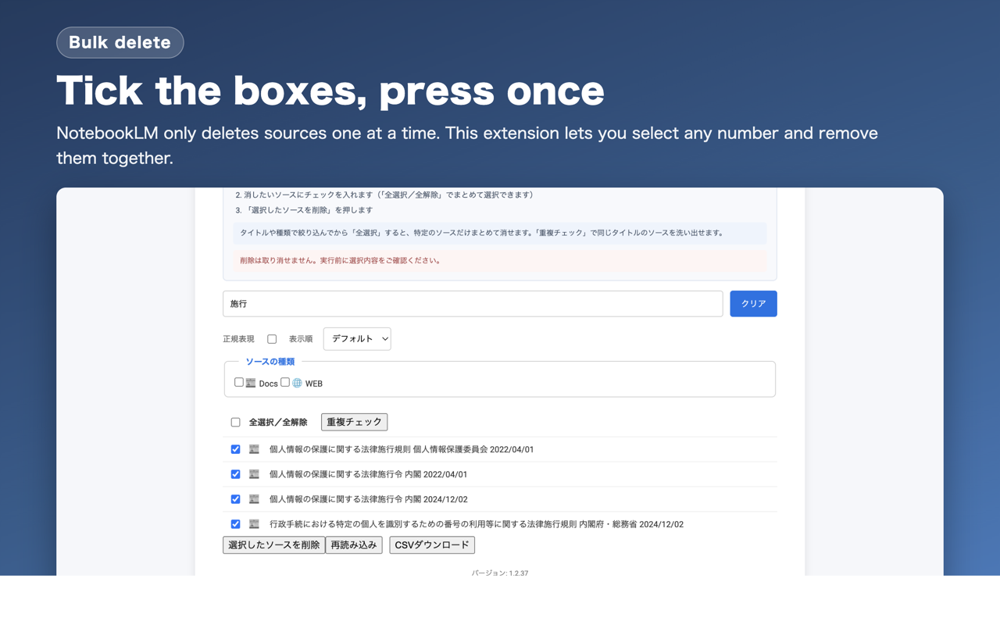
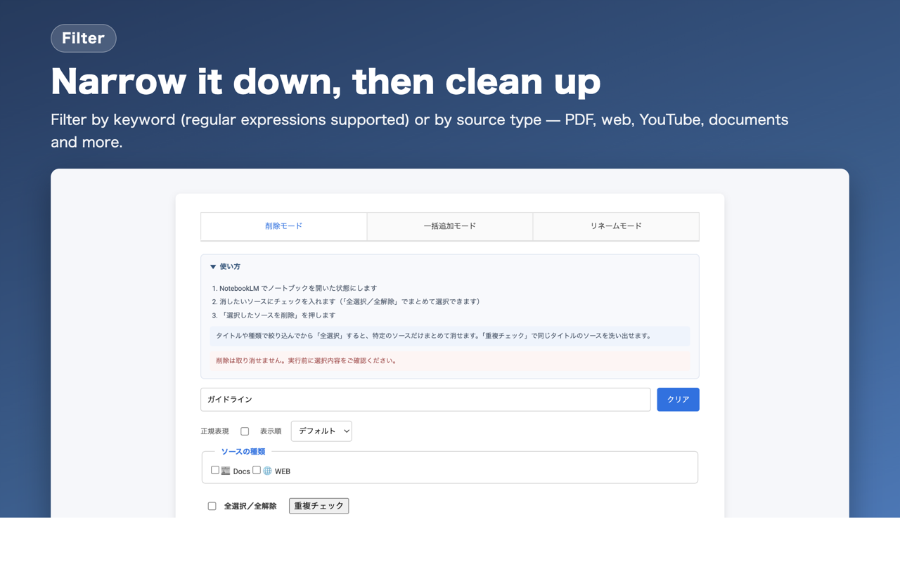

The basic flow
- Open a notebook in NotebookLMOpen an actual notebook, not the notebook list.
- Click the extension icon in the toolbarA separate window opens with your source list.
- Pick a modeSwitch between Delete, Batch add, and Rename with the tabs at the top.
The extension window stays bound to whichever notebook was open when you clicked the icon. After switching to a different notebook, click Reload to pick up its sources.
Bulk deleting sources

- Tick the sources you want to removeUse Select all / Deselect all to grab everything at once.
- Click "Delete selected sources"A confirmation dialog appears.
- Wait for it to finishProgress is shown as it runs. Click Abort deletion to stop partway through.
Deletion cannot be undone. NotebookLM offers no undo for removed sources, so check your selection before running. If you want a safety net, export the list with Download CSV first.
Filter first, then delete

- Filter by title — type a keyword and only matching sources remain
- Regex — tick this and your input is treated as a regular expression
- Source type — narrow to PDF, website, YouTube, Google Docs, and so on
- Sort order — default, A→Z, or Z→A
Select-all applies to what is currently visible. Filter down first, then select all, and you can clear out something specific — "every YouTube video I added last month", for example — without touching anything else.
Duplicate check
Duplicate check shows only sources that share a title with another one. It is the quickest way to clean up material you imported more than once. Untick the one copy you want to keep, then delete the rest.
Download CSV
Exports the currently visible sources as a CSV file. Useful both as a record before deleting and as the starting point for Rename mode.
Tick Include source details next to the button to export the extra information NotebookLM holds for each source:
- URL (web pages, and PDFs imported from a URL)
- YouTube video ID, channel name and video length
- Google Drive file ID
- Word count, file size and the date it was added
Source types come from NotebookLM itself rather than being guessed from icons, so Markdown files, PDFs, web pages and Google Docs are identified correctly.
This information is read from NotebookLM's internal data. If changes on Google's side break that, the extension shows an error rather than exporting a half-empty file. Clear the checkbox to save the usual title-and-type CSV instead.
Batch adding YouTube videos
Open the Batch add tab.
- Paste share links, one per lineShort
youtu.belinks and URLs carrying playlist parameters are normalized automatically. - Click "Add YouTube URLs"They are imported one at a time, so a long list takes a while.
This mode is YouTube-only. Bulk-adding websites was removed because NotebookLM now supports it natively.
Batch renaming titles
Open the Rename tab.
- Write one
old title,new titlepair per lineWrap a title in double quotes if it contains a comma. - Click "Batch rename"
Old titles are matched exactly. The reliable approach is to export the current titles with Download CSV, edit that in a spreadsheet, and paste the result back in.
2024-01-15 meeting notes,[Minutes] 2024-01 standup
"AI, ML basics",AI and ML basicsAbout speed
Deletion drives the actual NotebookLM interface, so large batches take time. Chrome also throttles timers in background tabs, which slows things down further. If you are in a hurry, leave the NotebookLM tab visible while it runs.
FAQ
Can I recover a deleted source?
No. NotebookLM does not provide an undo for removed sources.
Does it delete the notebook itself?
No. The extension only touches the sources inside the notebook you have open.
Is any of my data sent somewhere?
No. Everything runs locally in your browser, and source titles and contents are never transmitted.
It got stuck partway through
Click Abort deletion, then Reload to fetch the list again. If it still misbehaves, reload the NotebookLM tab and retry.
It stopped working entirely
This extension depends on the structure of the NotebookLM page, so changes on Google's side can temporarily break it. Please report it on GitHub Issues and it will be fixed.